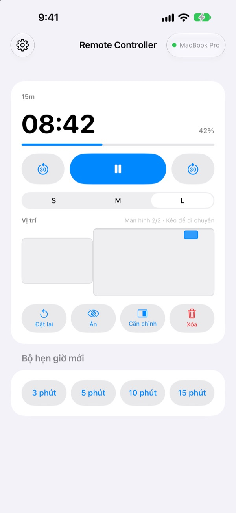
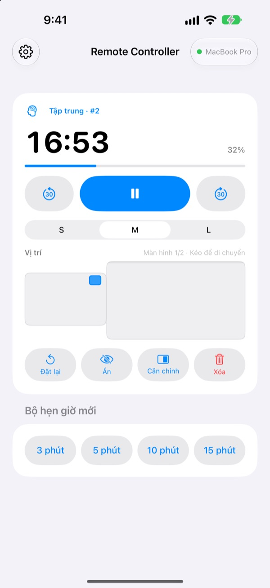
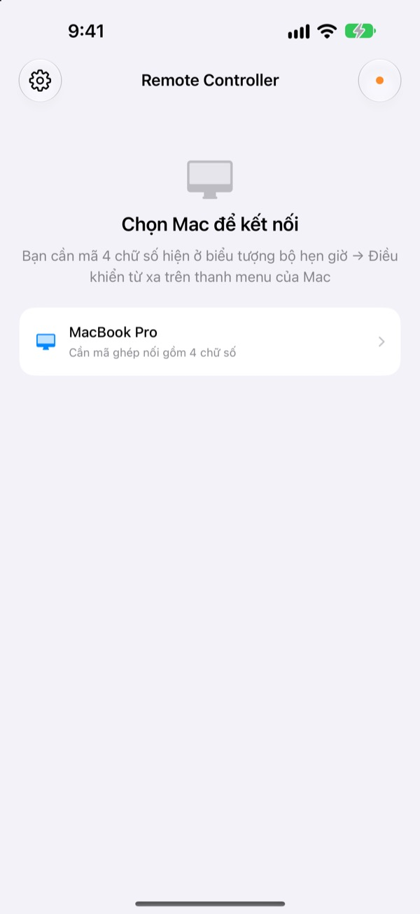

Rời xa Mac,
hẹn giờ vẫn trong tay
Điều khiển bộ hẹn giờ StickyPresenter trên Mac ngay từ iPhone. Bước lên phía trước khán phòng mà vẫn xem được thời gian còn lại, tạm dừng, thêm 30 giây hoặc kéo bộ hẹn giờ ra khỏi biểu đồ nó đang che.
Miễn phí · iOS 17 trở lên · Cần một máy Mac đang chạy StickyPresenter trên cùng mạng Wi‑Fi.

Vẫn phải quay về laptop chỉ để chỉnh bộ hẹn giờ?
Bài nói kéo dài và bạn cần thêm thời gian. Bộ hẹn giờ lại nằm đè lên đúng biểu đồ quan trọng nhất. Trước giờ, điều đó nghĩa là đi ngang sân khấu và chạm vào trackpad trước mặt mọi người. Với Remote Controller, bạn đứng nguyên chỗ và chạm iPhone một lần.
Xem thời gian còn lại và chỉnh ngay tại chỗ
Thời gian còn lại và tiến độ cập nhật mỗi giây. Khi dùng Pomodoro, bạn còn thấy đang ở phiên Tập trung hay Nghỉ và đến chu kỳ thứ mấy.
Nói quá giờ? Thêm 30 giây. Xong sớm? Bớt 30 giây. Bắt đầu bộ hẹn giờ mới 3, 5, 10 hoặc 15 phút chỉ với một chạm, và đổi widget sang cỡ S, M hoặc L để hàng ghế cuối cũng đọc được.

Nhập mã một lần là xong
Mở ứng dụng, mọi máy Mac đang chạy StickyPresenter trên Wi‑Fi của bạn sẽ hiện trong danh sách. Chọn Mac của bạn và nhập mã bốn chữ số ở biểu tượng bộ hẹn giờ ▸ Điều khiển từ xa trên thanh menu của Mac.
Từ đó, mỗi lần mở, ứng dụng tự kết nối với Mac đó. Không tài khoản, không máy chủ: hai thiết bị trao đổi trực tiếp qua mạng cục bộ.

Sẵn sàng sau ba bước
- 1
Mở StickyPresenter trên Mac
Khi biểu tượng bộ hẹn giờ hiện trên thanh menu là đã sẵn sàng. Ứng dụng vẫn ở đó dù bạn đóng hết các cửa sổ.
- 2
Mở ứng dụng trên cùng mạng Wi‑Fi
Khi được hỏi quyền truy cập mạng cục bộ, hãy chạm Cho phép. Nhờ vậy ứng dụng mới tìm được Mac của bạn.
- 3
Chọn Mac và nhập mã
Nhập mã ghép nối bốn chữ số ở biểu tượng bộ hẹn giờ ▸ Điều khiển từ xa trên thanh menu của Mac, thế là bạn đã nắm quyền điều khiển.
Những gì bạn làm được từ iPhone
- Thời gian còn lại
- Thời gian còn lại, tiến độ, phiên Tập trung hay Nghỉ của Pomodoro và số chu kỳ, cập nhật mỗi giây
- Bắt đầu · Tạm dừng
- Một nút lớn ở giữa
- −30 giây · +30 giây
- Hai nút hai bên chỉnh ngay bộ hẹn giờ đang chạy
- Bộ hẹn giờ mới
- 3, 5, 10 hoặc 15 phút
- Kích thước widget
- Widget cỡ S, M hoặc L
- Vị trí
- Kéo trên bản thu nhỏ bố cục màn hình Mac, kể cả sang màn hình mở rộng
- Ẩn
- Tạm ẩn widget khỏi khán giả
- Căn chỉnh
- Đưa widget bị lạc về cạnh cửa sổ bộ hẹn giờ
- Đặt lại · Xóa
- Chạy lại bộ hẹn giờ từ đầu, hoặc xóa nó
- Phím tắt · Siri
- Nói
Bắt đầu hẹn giờ bằng Remote Controllerđể mở bộ hẹn giờ trên Mac
Điều khiển từ xa chỉ làm việc với bộ hẹn giờ đang chạy trên Mac. Ghi chú và kịch bản máy nhắc chữ không bao giờ được gửi sang iPhone, và ứng dụng không chuyển slide.
Câu hỏi thường gặp
Có dùng riêng ứng dụng iPhone được không?
Không. Remote Controller là điều khiển từ xa cho StickyPresenter trên Mac, nên StickyPresenter phải đang chạy trên một máy Mac cùng mạng Wi‑Fi. Tải ứng dụng Mac qua liên kết bên dưới, hoặc từ mục Tải ứng dụng cho Mac trong Cài đặt của ứng dụng.
Mac của tôi không hiện trong danh sách.
Nếu sau 10 giây vẫn chưa thấy Mac, ứng dụng sẽ hiện danh sách cần kiểm tra. Hãy đi lần lượt từ trên xuống: StickyPresenter đang chạy trên Mac (có biểu tượng bộ hẹn giờ trên thanh menu), hai thiết bị cùng một mạng Wi‑Fi (Wi‑Fi dành cho khách sẽ không được), Remote Controller đã bật trong Cài đặt ▸ Quyền riêng tư & Bảo mật ▸ Mạng cục bộ trên iPhone, StickyPresenter được cho phép trong Cài đặt hệ thống ▸ Quyền riêng tư & Bảo mật ▸ Mạng cục bộ trên Mac, và VPN đã tắt.
Ứng dụng báo mã không đúng.
Nhập bốn chữ số đang hiện ở biểu tượng bộ hẹn giờ ▸ Điều khiển từ xa trên thanh menu của Mac. Nếu ai đó đã bấm Mã ghép nối mới trên Mac, chỉ mã mới còn dùng được.
Ứng dụng báo Mac không còn nhận ra iPhone này.
Điều này xảy ra sau khi chọn Quên các điều khiển từ xa đã ghép nối trên Mac, hoặc sau khi cài lại StickyPresenter. Chạm vào Mac trong danh sách và nhập mã ghép nối thêm một lần.
Ứng dụng báo Mac không phản hồi.
Hãy kiểm tra Mac không ở chế độ ngủ, hai thiết bị cùng một mạng Wi‑Fi và VPN đã tắt.
Ứng dụng báo cần cập nhật ứng dụng trên Mac.
StickyPresenter trên Mac đang cũ hơn bản điều khiển từ xa. Hãy cập nhật qua Mac App Store rồi chọn lại Mac.
Dùng trong phòng họp có nhiều máy Mac có an toàn không?
An toàn. Điều khiển từ xa chỉ trao đổi với đúng một máy Mac đã ghép nối, và điều khiển nào không biết mã thì không thể kết nối với Mac của bạn. Mọi dữ liệu đi qua kết nối trực tiếp được mã hóa trong cùng một mạng. Nếu từng để người khác thấy mã, hãy bấm Mã ghép nối mới trên Mac.
Những gì được gửi qua internet?
Bộ hẹn giờ và lệnh điều khiển không bao giờ rời khỏi mạng cục bộ. Thứ duy nhất đi qua internet là thống kê sử dụng ẩn danh, báo cáo sự cố và góp ý do chính bạn gửi. Chi tiết có trong chính sách quyền riêng tư.
Siri có thể bật bộ hẹn giờ ngay trước khi tôi lên nói không?
Có. Nói "Bắt đầu hẹn giờ bằng Remote Controller", hoặc dùng tác vụ Bắt đầu hẹn giờ trên Mac trong ứng dụng Phím tắt. Ứng dụng sẽ mở và chạy bộ hẹn giờ với độ dài bạn chọn (từ 1 đến 600 phút) ngay khi kết nối được với Mac.
Có câu hỏi, gặp lỗi hay muốn góp ý? Gửi thư đến mizzking75@gmail.com, hoặc gửi ngay từ iPhone qua biểu tượng bánh răng ở góc trên bên trái ứng dụng ▸ Gửi góp ý.